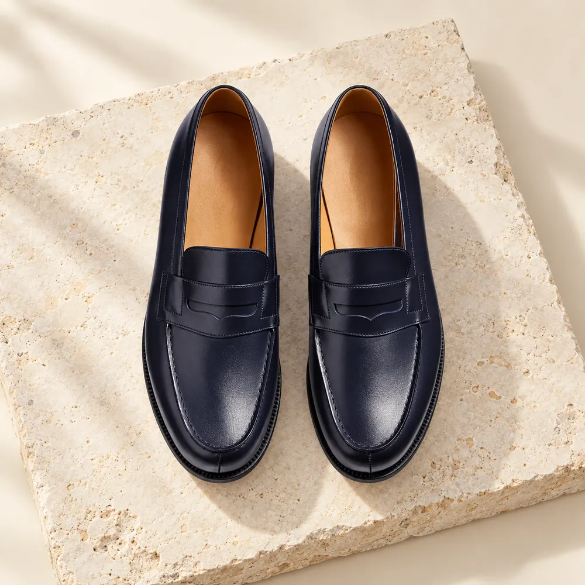

La sélectionCotonou · Bénin
Des détails qui font la différence.
Des souliers fabriqués à Cotonou ou choisis par la maison. Découvrez la sélection Yem’s.
Fabriqué ou choisi : l’origine est indiquée sur chaque pièce.
01Atelier à CotonouUne maison ancrée au Bénin
02Sélection attentiveDes modèles choisis par Yem’s
03Origine claireFabriqué ou sélectionné
04Le sens du détailCuir, ligne et finition
La sélection Yem’s
Trouvez votre allure.
Des paires choisies pour vous accompagner, avec le détail qui change tout.
Tout le catalogue L’atelier Yem’s · Cotonou
L’atelier Yem’s · CotonouLa maison Yem’s
Une vision du soulier, façonnée par le détail.
De l’atelier à la sélection, Yem’s défend une allure singulière et une attention sincère portée à chaque paire.
Découvrir notre histoire